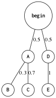

Probability
Table of Contents
1 Basic conceptions
1.1 Terms
1.1.1 experiment
Every probabilistic model involves an underlying process, called the experiment.
1.1.2 sample space
The set of all possible outcomes is called the sample space of the experiment, denoted by \(\Omega\).
1.1.3 event
A subset of the sample space, that is, a collection of possible outcomes is called an event.
1.1.4 observation
The outcome of each event is called observation.
1.2 Set
A set is a collection of objects, which are the elements of the set.
1.2.1 countable \(S=\{x_1, x_2, \cdots\}\)
1.2.2 uncountable \(S=\{x|x\ satisfies\ P\}\)
ex: \[\{k|k/2\ is\ integer\}\] \[\{x|0\le x\le 1\}\]
1.2.3 complement
The complement of a set S, with respect to the universe \(\Omega\), is the set \(\{x\in\Omega|x\notin S\}\) of all elements of \(\Omega\) that do not belong to S, and is denoted by \(S^c\). Note that \(\Omega^c = \emptyset\).
1.2.4 union
\[S\cup T = \{x|x\in S\ or\ x\in T\}\] \[\bigcup_{n=1}^{\infty} = S_1\cup S_2 \cup \cdots = \{x|x\in S_n\ for\ some\ n\}\]
1.2.5 intersection
\[S\cap T = \{x|x\in S\ and\ x\in T\}\] \[\bigcap_{n=1}^{\infty} = S_1\cap S_2 \cap \cdots = \{x|x\in S_n\ for\ all\ n\}\]
1.2.6 difference
\[S\setminus T=S\cap T^c\] \[S\setminus T=S\setminus (S\cap T)\]
1.2.7 scalar set
The set of scalars (real numbers) is denoted by \(\Re\), The two-dimensional plane is denoted by \(\Re_2\)
1.2.8 algebra of set
- Commutative
\[S\cap T=T\cap S\] \[S\cup T=T\cup S\]
- Associative
\[S\cap(T\cap U)=(S\cap T)\cap U\] \[S\cup(T\cup U)=(S\cup T)\cup U\]
- Distributive
\[S\cap(T\cup U)=(S\cap T)\cup(S\cap U)\] \[S\cup(T\cap U)=(S\cup T)\cap(S\cup U)\]
- de Morgan’s laws:
\[(\bigcup_n S_n)^c=\bigcap_n S_n^c\] \[(\bigcap_n S_n)^c=\bigcup_n S_n^c\]
- others
\[(S^c)^c=S\] \[S\cap S^c=\emptyset\] \[S\cup\Omega=\Omega\] \[S\cap\Omega=S\] \[(S\setminus T)\cup T = S\cup T\]
1.3 Axioms
1.3.1 Nonnegativity
For every event A, \[P(A) \ge 0\]
1.3.2 Normalization
The probability of the entire sample space \(\omega\) is equal to 1. \[P(\Omega) = 1\]
1.3.3 Additivity
If A and B are two disjoint events, then the probability of their union satisfies. \[P(A\cup B)=P(A)+P(B)\] or \(A_1, A_2, \cdots\) are disjoint events, \[P(\bigcup_{i=1}^n A_i) = \sum_{i=1}^n P(A_i)\]
1.4 Consequences
1.4.1 The probability of the empty set
\[1=P(\Omega)=P(\Omega\cup\emptyset)=P(\Omega)+P(\emptyset)=1+P(\emptyset)\] \[\therefore P(\emptyset)=0\]
1.4.2 Monotonicity
If \(A\subseteq B\), then \(P(A)\le P(B)\)
1.4.3 Addition law
\[P(A\cup B)=P(A)+P(B)-P(A\cap B)\]
1.4.4 others
- \(P(A\cup B)\le P(A)+P(B)\) (addition law & axioms 1)
- \(P(A\cup B\cup C) = P(A) + P(A^c\cap B) + P(A^c\cap B^c\cap C)\) (axioms 3)
- if \(P(A\cap B)\) equals to 0, then A and B are mutually exclusive
1.5 Random Variable
random variable is a variable that can takes on a set of values
1.6 Discrete
discrete if a variable is discrete, that means it can only take exact values.
1.7 Expectation
1.7.1 Discrete
\[E[X]=\sum_{x\in R_X}xPMF_X(x)\]
1.7.2 Continuous
\[E[X]=\int_{-\infty}^{\infty}xPDF_X(x)dx=\int_{-\infty}^{\infty}xd(CDF_X(x))\]
1.8 Variance
\[\begin{align*} Var[X] & = E[(X-E[X])^2)] \\ & = E[X^2-2E[X] X + E[X]^2] \\ & = E[X^2]-2E[X]\cdot E[X] + E[X]^2 \\ & = E[X^2]-E[X]^2 \end{align*}\]
1.8.1 More details
\[Var[aX+b]=a^2Var[X]\]
1.9 Standard Deviation
\[\sigma=\sqrt{Var[X]}\]
1.10 Moment
The \(n_{th}\) moment of a random variable is the expected value of its \(n_{th}\) power \[\mu_X(n)=E[X^n]\]
1.11 Central Moment
The \(n_{th}\) central moment of a random variable X is the expected value of the \(n_{th}\) power of the deviation of X from its expected value. \[\bar\mu_X(n)=E[(X-E[X])^n]\]
- Variance: 2nd central moment
- Skewness: 3th central moment
- Kurtosis: 4th central moment
2 Conditional probabilities
2.1 Conceptions
2.1.1 \(P(A|B)\)
The conditional probability of A given B, Ex:

then, \(P(B|A)=0.3\)
2.1.2 \(P(A|B) = \frac{P(A\cap B)}{P(B)}\)
- useful restatement: \(P(A\cap B)=P(A|B)P(B)\)
2.2 Axioms
2.2.1 Nonnegativity
2.2.2 Normalization
\[P(B|B)=\frac{P(B)}{P(B)}=1\]
2.2.3 Additivity
If \(A_1, A_2, \cdots\) are disjoint events, \[P(\bigcup_{i=1}^n A_i|B) = \sum_{i=1}^n P(A_i|B)\]
2.3 Consequences
2.3.1 Multiplication Rule
\[P(\cap_{i=1}^{n}A_i)=P(A_1)P(A_2|A_1)P(A_3|A_1\cap A_2)\cdots P(A_n|\cap_{i=1}^{n-1}A_i)=\prod_{i=1}^n P(A_n|\cap_{i=1}^{n-1}A_i)\]
- proof \[P(\cap_{i=1}^n A_i)=P(A_1)\frac{P(A_1\cap A_2)}{P(A_1)}\cdots\frac{P(\cap_{i=1}^n A_i)}{P(\cap_{i=1}^{n-1} A_i)}\] \[=P(A_1)P(A_2|A_1)\cdots P(A_n|\cap_{i=1}^{n-1} A_i)\]
2.4 Total Probability Theorem
Let \(A_1, A_2,\cdots, A_n\) be disjoint events that form a partition of the sample space, then for any event B: \[P(B)=P(A_1\cap B)+\cdots+P(A_n\cap B)\] \[=P(A_1)P(B|A_1)+\cdots+P(A_n)P(B|A_n)\]
2.5 Bayes’ Rule
- Useful for finding reverse conditional probabilities.
Let \(A_1, A_2,\cdots, A_n\) be disjoint events that form a partition of the sample space, then for any event B: \[P(A_i\cap B)=P(A_i|B)P(B)=P(A_i)P(B|A_i)\] \[P(A_i|B)=\frac{P(A_i)P(B|A_i)}{P(B)}\]
- depends on total probability theorem, we have:
\[P(A_i|B)=\frac{P(A_i)P(B|A_i)}{P(A_1)P(B|A_1)+\cdots+P(A_n)P(B|A_n)}\]
2.5.1 two events
\[P(A|B)=\frac{P(B|A)P(A)}{P(B)}\]
2.6 Independence
if A and B are independent events. \[P(A|B)=P(A)\] is equivalent to \[P(A\cap B)=P(A)P(B)\]
- If \(A\) and \(B\) are independent, so are \(A\) and \(B^c\)
2.6.1 more events
\[P(\bigcap_{i=1}^n A_i)=\prod_{i=1}^n P(A_i)\]
2.7 Conditional Independence
Two events A and B are said to be conditionally independent \[P(A\cap B|C)=P(A|C)P(B|C)\] is equivalent to(hint: Bayes' rule) \[P(A|B\cap C)=P(A|C)\]
3 Random Variables
- difinition: A random variable is a real-valued function of the outcome of the experiment
- A function of a random variable defines another random variable
3.1 Discrete RV
- A (discrete) random variable has an associated probability mass function(PMF)
3.1.1 PMF
Probability mass function, \[PMF_X(x)=P(X=x)\] Note that: \[\sum_x PMF_X(x)=1\]
3.1.2 CDF
\[CDF_X(x)=P(X\le x)=\sum_{k\le x}PMF_X(k)\]
3.2 Continuous RV
3.2.1 PDF
\[\begin{align*} PDF_X(x) & =\lim_{\varDelta x\to 0}\frac{P(x\le X \le x+\varDelta x)}{\varDelta x}\\ & =\lim_{\varDelta x\to 0}\frac{CDF_X(x+\varDelta x)-CDF_X(x)}{\varDelta x}\\ & = CDF^\prime_X(x) \end{align*}\]
\[\begin{align*} P_X(a < x \le b) & = CDF_X(b)-CDF_X(a)\\ & = \int_{-\infty}^b PDF_X(x)\mathrm{d}x - \int_{-\infty}^a PDF_X(x)\mathrm{d}x\\ & = \int_a^b PDF_X(x)\mathrm{d}x \end{align*}\]
- \(\int_{-\infty}^{\infty}PDF_X(x)\mathrm{d}x = 1\)
- \(PDF_X(x)\ge 0\) for all \(x\)
- If \(\varDelta x\) is very small, then \(P(x\le X \le x+\varDelta x) \approx PDF_X(x)\cdot \varDelta x\)
3.2.2 CDF
\[CDF_X(x)=P(X\le x)=\int_{-\infty}^x PDF_X(u)\mathrm{d}u\]
4 Counting
- Permutations of n objects: \(n!\)
- k-permutations of n objects: \(\frac{n!}{(n-k)!}\)
- Combinations of k out of n objects: \({n\choose k}=\frac{n!}{k!(n-k)!}\)
Partitions of \(n\) objects into \(r\) groups with i th group having \(n_i\) objests:
\[{n \choose n_1,n_2,\cdots,n_r} = \frac{n!}{n_1!n_2!\cdots n_r!}\] this is called multinomial coefficient
4.1 n balls into m boxes
- ball same, box same -> enum
- ball same, box diff -> partition
- box not null: \({n-1 \choose k-1}\)
- box nullable: \({n+k-1 \choose k-1}\)
5 Linear Transforms
Linear transforms are when a variable X is transformed into aX + b, where a and b are constants. The probabilities of each Y should be the same as X \[E(aX+b)=aE[X]+b\] \[Var(aX+b)=a^2Var[X]\]
5.1 Independent observations
\[E(X_1+X_2+...X_n) = nE[X]\] \[Var(X_1+X_2+...X_n) = nVar[X]\]
5.2 Independent Variables
X and Y are independent random variables \[E(X+Y)=E[X]+E[Y]\] \[E(X-Y)=E[X]-E[Y]\] \[Var(X+Y)=Var[X]+Var(Y)\] \[Var(X-Y)=Var[X]+Var(Y)\]
- linear transforms \[E(aX+bY)=aE[X]+bE[Y]\] \[E(aX-bY)=aE[X]-bE[Y]\] \[Var(aX+bY)=a2Var[X]+b2Var(Y)\] \[Var(aX-bY)=a2Var[X]-b2Var(Y)\]
6 Discrete distributions
6.1 Bernoulli distribution
Let \(X\) be a discrete random variable. Let its support be \(R_X = \{0, 1\}\), the probability of \(X=1\) is \(p\)
\[X\sim Bernoulli(p)\]
6.1.1 PMF
\[PMF_X(x)= \begin{cases} p, & \mbox{if }x = 1 \\ 1-p, & \mbox{if }x = 0 \\ 0, & \mbox{if }x\notin R_X \\ \end{cases}\]
6.1.2 E[X]
\[E[X]=p\]
6.1.3 Var[X]
\[Var[X]=p(1-p)\]
6.1.4 CDF
\[CDF_X(x)= \begin{cases} 0, & \mbox{if }x < 0\\ 1-p, & \mbox{if }0 \le x < 1 \\ 1, & \mbox{if }x\ge 1 \\ \end{cases}\]
6.2 Uniform distribution
\[X\sim Uniform(a, b)\] A discrete random variable has a uniform distribution if all the values belonging to its support have the same probability density. Let \(X\) be a discrete random variable. Let its support be \(R_X=\{a, a+k, a+2k \dots b\}\). Let the number of \(R_X\) be \(N\), then \(N=\frac{b-a}{k}+1=\frac{b-a+k}{k}\)
6.2.1 PMF
\[PMF_X(x)=\frac{1}{N}=\frac{k}{b-a+k}\]
6.2.2 E[X]
\[E[X]=\frac{a+b}{2}\]
6.2.3 Var[X]
\[Var[X]=k^2(\frac{N^2-1}{12})=\frac{(b-a)(b-a+2)}{12}\]
6.2.4 CDF
\[CDF_X(x)= \begin{cases} 0, & \mbox{if }x < a\\ \frac{\lfloor x\rfloor -a+k}{b-a+k}, & \mbox{if }a \le x \le b \\ 1, & \mbox{if }x > b \\ \end{cases}\]
6.3 Binomial distribution
- You’re running a series of independent trials.
- There can be either a success or failure for each trial, and the probability of success is the same for each trial.
- There are a finite number of trials.
- The main thing you’re interested in is the number of successes in the \(n\) independent trials.
Let:
- \(X\) be the number of successful outcomes out of \(n\) trials
- \(p\) be the probability of success in a trial
\[X\sim B(n, p)\]
6.3.1 PMF
\[PMF_X(x)=\dbinom{n}{x} p^x (1-p)^{n-x}\]
6.3.2 E[X]
\[E[X]=np\]
6.3.3 Var[X]
\[Var[X]=np(1-p)\]
6.3.4 CDF
\[CDF_X(x)=\sum_{m=0}^{\lfloor x \rfloor}{n \choose m}p^m(1-p)^{n-m}\]
6.4 Geometric distribution
- You run a series of independent trials.
- There can be either a success or failure for each trial, and the probability of success is the same for each trial.
- The main thing you’re interested in is how many trials are needed in order to get the first successful outcome.
Let:
- \(X\) be the number of trials needed to get the first successful outcome
- \(p\) be the probability of success in a trial
\[X\sim Geo(p)\]
6.4.1 PMF
let X be the number of trials needed to get the first successful outcome. To find the probability of \(X\) taking a particular value \(x\), using: \[PMF_X(x)=p(1-p)^{x-1}\]
6.4.2 E[X]
\[E[X]=\frac{1}{p}\]
6.4.3 Var[X]
\[Var[X]=\frac{1-p}{p^2}\]
6.4.4 CDF
\[CDF_X(x)=1-(1-p)^{\lfloor x \rfloor}\]
6.4.5 memorylessness
6.5 Pascal distribution
aslo known as Negative Binomial Distribution
- You run a series of independent trials.
- There can be either a success or failure for each trial, and the probability of success is the same for each trial.
- The main thing you’re interested in is how many trials are needed in order to get the \(k\) successful outcomes.
Let:
- \(X\) be the number of trials needed to get the \(k\) successful outcomes
- \(p\) be the probability of success in a trial
\[X\sim Pascal(k, p)\]
6.5.1 PMF
\[PMF_X(x)=\begin{cases} {x-1 \choose k-1}(1-p)^{x-k}p^k, & x\ge k\\ 0, & otherwise\\ \end{cases}\]
6.5.2 E[X]
\[E[X]=\frac{k}{p}\]
6.5.3 Var[X]
\[Var[X]=\frac{k(1-p)}{p^2}\]
6.5.4 CDF
\[CDF_X(x)=\begin{cases} I_p(k, \lfloor x \rfloor - k + 1), & x\ge k\\ 0, & otherwise\\ \end{cases}\] \(I_z(a,b)\) is the regularized incomplete beta function
6.6 Poisson distribution
- Individual events occur at random and independently in a given interval.
- You know the mean number of occurrences in the interval or the rate of occurrences, and it’s finite.
- The purpose is to know the number of occurrences in another particular interval.
Let:
- \(X\) be the number of occurrences in a particular interval \(T\)
- \(\lambda\) be the rate of occurrences, should be \(uT\), \(u\) is the frequency of occurrences
\[X\sim Po(\lambda)\]
6.6.1 PMF
\[PMF_X(x)=\frac{e^{-\lambda}\lambda^{x}}{x!}\]
6.6.2 E[X]
\[E[X]=\lambda\]
6.6.3 Var[X]
\[Var[X]=\lambda\]
6.6.4 CDF
\[CDF_X(x)= \begin{cases} -\lambda^e\sum_{n=-\infty}^{\lfloor x \rfloor}e^{-\lambda}\cdot \frac{\lambda^n}{n!}, & \mbox{if }x\ge 1 \\ 0, & \mbox{otherwise} \\ \end{cases}\]
6.6.5 linear transforms
If \(X\sim Po(\lambda_x)\) and \(Y\sim Po(\lambda_y)\), and \(X\) and \(Y\) are independent, \[X+Y\sim Po(\lambda_x + \lambda_y)\]
6.6.6 simplify the special Binomial distribution case
If \(X\sim B(n, p)\) where \(n\) is large and \(p\) is small, you can approximate it with \(X \sim Po(np)\).
7 Continuous distributions
7.1 Relationship between PDF & CDF
\[\frac{dy}{dx}CDF(x)=\int PDF(x)dx\]
7.2 Uniform distribution
A continuous random variable has a uniform distribution if all the values belonging to its support have the same probability density. \[X\sim Uniform(a, b)\]
7.2.1 PDF
\[PDF_X(x)=\begin{cases} \frac{1}{b-a}, & a \le x \le b\\ 0, & \mbox{otherwise}\\ \end{cases}\]
7.2.2 E[X]
\[E[X]=\frac{a+b}{2}\]
7.2.3 Var[X]
\[Var[X]=\frac{(b-a)^2}{12}\]
7.2.4 CDF
\[CDF_X(x)=\begin{cases} 0, & \mbox{if } x < a\\ \frac{x-a}{b-a}, & \mbox{if } a\le x \le b\\ 1, & \mbox{if } x > b \end{cases}\]
7.3 Exponential distribution
How long do we need to wait before a customer enters our shop? How long will it take before a call center receives the next phone call? All these questions concern the time we need to wait before a given event occurs. If this waiting time is unknown, it is often appropriate to think of it as a random variable having an exponential. \[X\sim Exponential(\lambda)\]
- most commonly used to model waiting times
- \(\lambda\) is called rate parameter
7.3.1 PDF
\[PDF_X(x)=\begin{cases} \lambda e^{-\lambda x}, & \mbox{if } x \ge 0\\ 0, & otherwise \end{cases}\]
7.3.2 E[X]
\[E[X]=\frac{1}{\lambda}\]
7.3.3 Var[X]
\[Var[X]=\frac{1}{\lambda^2}\]
7.3.4 CDF
\[CDF_X(x)=\begin{cases} 1-e^{-\lambda x}, & \mbox{if } x \ge 0\\ 0, & otherwise \end{cases}\]
7.3.5 memorylessness
7.4 Erlang distribution
Given a Poisson distribution with a rate of change \(\lambda\), We use Erlang distribution to calculate the waiting times until the \(n\) th Poisson event occurs.
\[X\sim Erlang(n, \lambda)\]
7.4.1 PDF
\[PDF_X(x)=\begin{cases} \frac{1}{(n-1)!}\lambda^n x^{n-1} e^{-\lambda x}, & x\ge 0\\ 0, & otherwise \end{cases}\]
7.4.2 E[X]
\[E[X]=\frac{n}{\lambda}\]
7.4.3 Var[X]
\[Var[X]=\frac{n}{\lambda^2}\]
7.4.4 CDF
\[CDF_X(x)=\begin{cases} 1-\sum_{k=0}^{n-1}\frac{(\lambda x)^k}{k!}e^{-\lambda x}, & x\ge 0\\ 0, & otherwise \end{cases}\]
7.5 Normal distribution
\[X\sim N(\mu, \sigma^2)\] or \[X\sim Gaussian(\mu, \sigma)\]
7.5.1 PDF
\[PDF_X(x)=\frac{1}{\sigma\sqrt{2\pi}}\cdot e^{-\frac{(x-\mu)^2}{2\sigma^2}}\]
7.5.2 CDF
\[CDF_X(x) = \int_{-\infty}^{x}PDF_X(x)dx=\frac{1}{\sigma\sqrt{2\pi}}\int_{-\infty}^{x}e^{-\frac{(x-\mu)^2}{2\sigma^2}}dx\]
- Use z-table
7.5.3 approximate Binomial distribution
if \(X\sim B(n, p)\) and \(np>15\) and \(nq>5\) , use \(X\sim N(np, npq)\) to approximate it.
- need to apply a continuity correction (round to discrete value), eg [5.5, 6.5) round to 6
7.5.4 approximate Poisson distribution
if \(X\sim Po(\lambda)\) and \(\lambda>15\), use \(X\sim N(\lambda, \lambda)\) to approximate it.
- need to apply a continuity correction (round to discrete value)
8 Binomial Theorem
\[(x+y)^n = \sum_{k=0}^{n} \dbinom{n}{k}x^{n-k}y^{k}\]
9 Function of Random Variable
Let \(Y=g(X)\)
9.1 Discrete
\[PMF_Y(y)=\sum_{\forall x|g(x)=y}PMF_X(x)\]
9.2 Continuous
- Caculate CDF: \(CDF_Y(y)=P[Y\le y]\)
- Caculate PDF: \(PDF_Y(y)=\frac{d}{dy}CDF_Y(y)\)
9.2.1 Example
\(Y=g(X)=aX+b\), then \[CDF_Y(y)=P(X\le \frac{y-b}{a})=CDF_X(\frac{y-b}{a})\] \[PDF_Y(y)=\frac{d}{dy}CDF_Y(y)=\frac{1}{|a|}PDF_X(\frac{y-b}{a})\]
10 Conditional probability distributions
10.1 Discrete
10.1.1 Conditional PMF
\[PMF_{X,Y}(x, y)=PMF_Y(y)PMF_{X|Y}(x|y)\]
- extension \[PMF_{X,Y,Z}(x, y, z)=PMF_Y(y)PMF_{Y|Z}(y|z)PMF_{X|Y,Z}(x|y,z)\]
10.1.2 Expectation
\[E[X|Y=y]=\sum x\cdot PMF_{X|Y}(x|Y=y)\]
10.2 Continuous
10.2.1 Conditional PDF
\[PDF_{X,Y}(x, y)=PDF_Y(y)PDF_{X|Y}(x|y)\]
10.2.2 Expectation
\[E[X|Y=y]=\int_{-\infty}^{\infty}x\cdot PDF_{X|Y}(x|Y=y)dx\]
10.2.3 Marginal PDF
\[PDF_X(x)=\int PDF_{X,Y}(x, y)dy+\int PDF_{X,Z}(x, z)dz\]
10.3 Memoryless
\[PMF_{X|Y}(x|y) = PMF_{X}{x}\] e.g.
- Geometric distribution
- Exponential distribution
11 Joint probability distributions
11.1 PMF/PDF
11.1.1 Discrete
\[PMF_{X,Y}(x, y) = P(X=x\ and\ Y=y)\]
- \(0\le PMF_{X,Y}(x, y) \le 1\)
- \(\sum_{x=-\infty}^{\infty}\sum_{y=-\infty}^{\infty}PMF_{X,Y}(x, y)=1\)
- if \(x, y\) are independent, \(PMF_{X,Y}(x, y)=PMF_X(x)PMF_Y(y)\)
11.1.2 Continuous
\[PDF_{X,Y}(x, y) = \frac{d CDF_{X,Y}(x, y)}{dx}\frac{d CDF_{X,Y}(x, y)}{dy}\] \[CDF_{X,Y}(x, y) = \int_{-\infty}^{x}\int_{-\infty}^{y}PDF_{X,Y}(u, v)dvdu\]